Learning outcomes
By the end of Chapter 7 you should be able to do each of these. The tag shows where it is covered.
- 7.1Explain the difference between relative time and numeric time.
- 7.1.1Describe the principles of stratigraphy (the chapter says five; it lists six).
- 7.1.4Apply relative dating principles to a block diagram and interpret the sequence of geologic events.
- 7.2.1Define an isotope, and explain alpha decay, beta decay, and electron capture as mechanisms of radioactive decay.
- 7.2.2Describe how radioisotopic dating is accomplished and list the four key isotopes used.
- 7.2.2Explain how carbon-14 forms in the atmosphere and how it is used in dating recent events.
- 7.2.3Explain how scientists know the numeric age of the Earth and other events in Earth history.
- 7.2.4Explain how sedimentary sequences can be dated using radioisotopes and other techniques.
- 7.3.1Define a fossil and describe types of fossil preservation.
- 7.3.2Outline how natural selection takes place as a mechanism of evolution.
- 7.4Describe stratigraphic correlation.
- 7.4.5List the eons, eras, and periods of the geologic time scale and explain the purpose behind the divisions.
- 7.4.3Explain the relationship between time units and corresponding rock units: chronostratigraphy versus lithostratigraphy.
How to use this guide
Underlined words are key terms. Click one, or open Key terms at the bottom right, to read and search every definition from this chapter. Geologists tell time in two ways: relative time puts events in order (older or younger) without numbers, and numeric (absolute) time gives an age in years. The geologic time scale and the outline of Earth history were worked out with relative time long before anyone could measure an age in years.
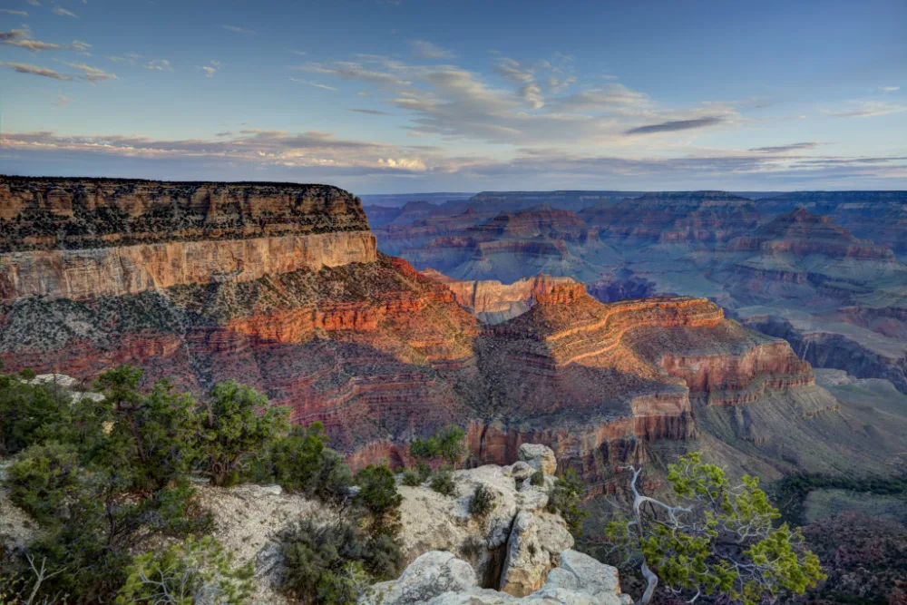
A short history. Nicolas Steno (1638–1686) introduced the basic principles of , the study of layered rocks, in 1669. William Smith (1769–1839), working in English coal mines, saw that and their order were the same across the region; he made the first national geologic map of Britain and became "the Father of English Geology". Nineteenth-century scientists used Steno's principles to build a relative time scale, naming units after the rocks of the areas where they were described (7.4.5). Earth's history itself is the topic of Chapter 8.
7.1Relative dating
decides whether one rock or event is older or younger than another, without knowing how many years ago either formed. Its principles look obvious now, but scholars did not generally accept them until the scientific revolution of the 17th and 18th centuries. James Hutton's ("the present is the key to the past"; Unit 1) gave the basis for reading rocks with scientific principles.
7.1.1 Relative dating principles
These principles are used across geology but are most useful in stratigraphy (Figure 7.2).
- . In an undisturbed sequence of sedimentary strata, the bottom layers are the oldest and the layers above them are younger.
- . Layers deposited from above, such as sediments and lava flows, are laid down horizontally. The exception is at a basin's margins, where strata can slope slightly down into the .
- . Within the depositional basin, strata continue in all directions until they thin out at the basin's edge. Every layer ends somewhere, at a barrier such as a ridge or where it gets too far from its sediment source or volcano. Strata later cut by a canyon stay continuous on both sides.
- . Folds, faults, and igneous intrusions that cut across rocks are younger than the rocks they cut.
- . When one rock formation contains pieces of another rock, the included rock is older than the .
- . Evolution has produced a succession of unique fossils that match units of the geologic time scale. Assemblages (groups of several distinct fossils found together) are unique to the time they lived, so they correlate rocks of the same age over wide areas.


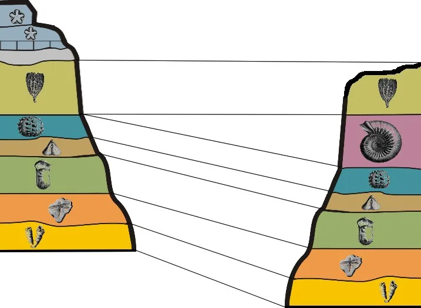
7.1.2 Grand Canyon example
The Grand Canyon shows the principles at work. Its layers are stacked from oldest at the bottom to youngest at the top (superposition). The white layer just below the rim, the Coconino Sandstone, appears on both sides of the canyon carved by the Colorado River (lateral continuity).
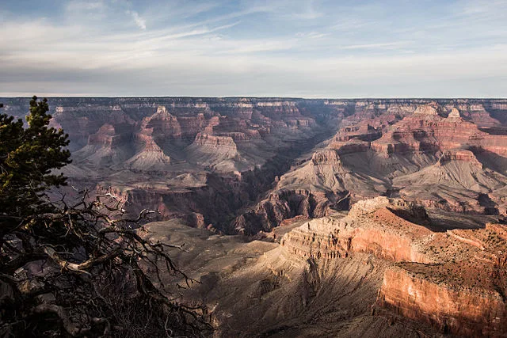
Figure 7.7 shows three sets of rocks. At the bottom are the Vishnu Basement Rocks: metamorphic schist (#16), the oldest unit, cut by a granite intrusion (#17), which is therefore younger (cross-cutting). Above them, the sedimentary layers are numbered in reverse, #15 the oldest and #1 the youngest (superposition). The region lies on the Colorado Plateau, where strata are horizontal or nearly so (original horizontality); apart from a broad regional uplift they have barely been disturbed.

The strata were laid flat on older igneous and metamorphic . Because metamorphism, intrusion, and erosion broke the record between the basement and the strata, the contact is an : a span when nothing was deposited or when deposits were eroded, so no rock records that time at that place. Cross-sections and stratigraphic columns show unconformities as wavy lines.
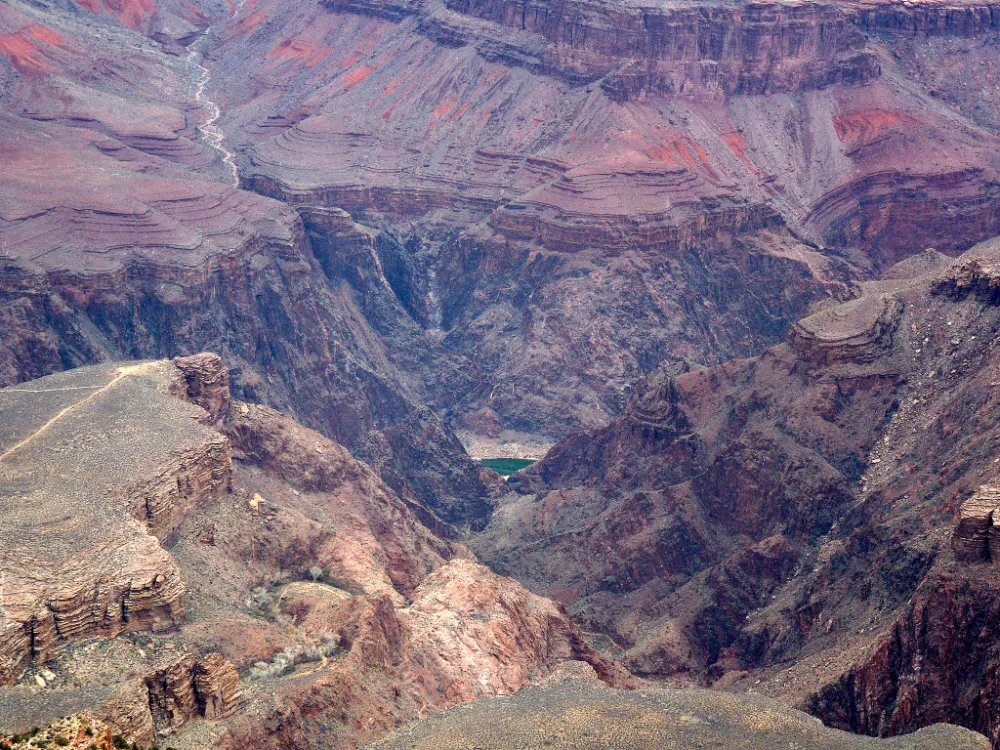
7.1.3 Unconformities
There are three types (Table 7.1, Figure 7.9).
| Type | Rock below | Rock above | Grand Canyon example |
|---|---|---|---|
| Igneous or metamorphic (crystalline) | Sedimentary strata | Strata on the Vishnu basement | |
| Sedimentary strata, parallel | Sedimentary strata, parallel; a break with no deposition or with erosion between | Between the Muav, Temple Butte, and Redwall formations | |
| Sedimentary strata tilted, folded, and/or faulted, then eroded | Horizontal sedimentary strata | The Great Unconformity |
 Disconformitya break between parallel strata
Disconformitya break between parallel strata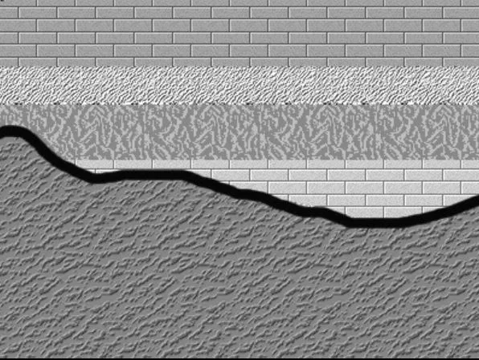
Nonconformitystrata on igneous or metamorphic rock Angular unconformityflat strata on tilted strata
Angular unconformityflat strata on tilted strata
Disconformities in the Grand Canyon. The strata record marine and as sea level rose and fell over millions of years. High sea level laid down marine strata; when the sea fell, the land was exposed and eroded. Layers that could have been there are missing, and the time they would have recorded is represented by the disconformity (heavy wavy lines in Figure 7.7).
The Great Unconformity. Most Phanerozoic strata in the canyon are horizontal, but near the bottom they lie on tilted strata. Tectonic processes tilted the lower strata, which were then eroded; later horizontal strata were deposited on top.


7.1.4 Applying relative dating principles
Using the principles and what you know about igneous, sedimentary, and metamorphic rock (Units 4–6), read the events in Figure 7.12 from oldest to youngest:

- Gneiss forms and is folded (oldest).
- Fault A cuts and displaces the gneiss.
- Batholith B (granite) intrudes as magma; its irregular outline cuts both the gneiss and fault A, so it is younger than both.
- Erosion of gneiss, fault A, and B makes a nonconformity (the wavy line), an ancient land surface.
- Layer C is deposited on that surface, perhaps by a marine transgression.
- Dike D cuts every rock except E.
- Erosion flattens the land: the top of D is level with the top of C, so there is a disconformity between C/D and E.
- Layer E is deposited.
- Fault F cuts B, C, and E, making a (the low ridge, upper left).
- Present-day erosion rounds off the scarp and shapes the modern landscape (youngest).
Check yourself: Section 7.1 quiz in the textbook ↗
7.2Absolute dating
Relative time tells the story in order but gives no numbers, so it cannot give the rate of geologic processes. From uniformitarianism, early geologists reasoned that processes are slow and Earth is very old, and relative dating was the only method until the end of the 19th century. The discovery of in the late 1800s gave a new tool, radioisotopic dating, which assigns ages in years to mineral grains. These numbers do not depend on comparison with other rocks, so the method is called . Radioisotopic dating is the most common type and the focus of this section.

7.2.1 Radioactive decay
An is an atom of an element with a different number of neutrons. Hydrogen always has 1 proton (its atomic number), but it can have 0, 1, or 2 neutrons. Neutrons plus the atomic number give the atomic mass number: protium (1H), deuterium (2H), and tritium (3H) (Figure 7.14).
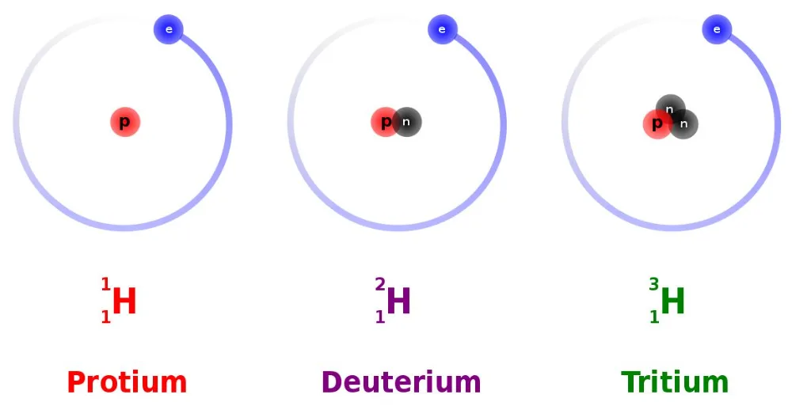
Many elements have stable and unstable isotopes; 1H and 2H are stable, 3H is not. Unstable, radioactive isotopes spontaneously release particles or energy, , and become a more stable isotope of another element (for example 14C → 14N).
When any one atom decays is random and unpredictable. But a rock can hold trillions of radioactive atoms, and such a large group decays in a predictable way. The is the time for half of the unstable atoms to decay to a stable isotope. It is constant and measurable for each isotope, so it can be used to calculate a rock's age: for example 4.5 billion years for uranium-238 (238U) and 5,730 years for 14C.
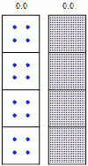
Two key assumptions
- The mineral grains holding the isotope formed at the same time as the rock, like minerals crystallizing from magma.
- The crystals stayed a : no elements moved in or out afterward.
| Rock or material | Suitable? | Why |
|---|---|---|
| Igneous rock | Best | Its minerals give the date of crystallization from magma. |
| Metamorphic rock | Limited | Metamorphism can reset the clock; ages may be a smear of several metamorphic events, not the original crystallization age. |
| sedimentary rock | No | Clasts come from many parent rocks in unknown places, so ages are meaningless for the deposit. |
| Precipitated sediments (e.g. ) | Yes | Minerals that grew in place may hold suitable elements. |
| Pyroclastic layers, lava flows, cross-cutting igneous rocks, sills | Yes | Used to date or bracket the sedimentary rocks around them (7.2.4). |
| grains | Yes | Very resistant; give very old dates, including Earth's oldest known material, and the age of source rocks of metamorphosed sediments. |
Three ways atoms decay
| Mode | What happens in the nucleus | Atomic number | Mass number | Example |
|---|---|---|---|---|
| An alpha particle (2 protons + 2 neutrons, a helium nucleus) is emitted | −2 | −4 | 238U → 234Th | |
| A neutron splits into a proton and an electron; the electron leaves as a beta ray | +1 | No change | 234Th → 234Pa → 234U | |
| A proton captures an electron from a shell and becomes a neutron | −1 | No change | 40K → 40Ar |
Alpha decay. The emitted helium nucleus can leave helium gas trapped in the mineral's crystal lattice. Losing 2 protons moves the atom two places down the Periodic Table; losing 4 particles lowers its mass by 4. 238U (92 protons, mass 238) emits an alpha particle and becomes thorium-234. The product of decay is the ; the original is the . With its 4.5-billion-year half-life, 238U dates the oldest materials on Earth, meteorites, and the earliest events of the solar system.
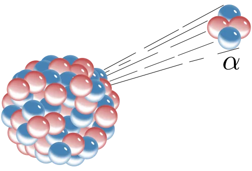
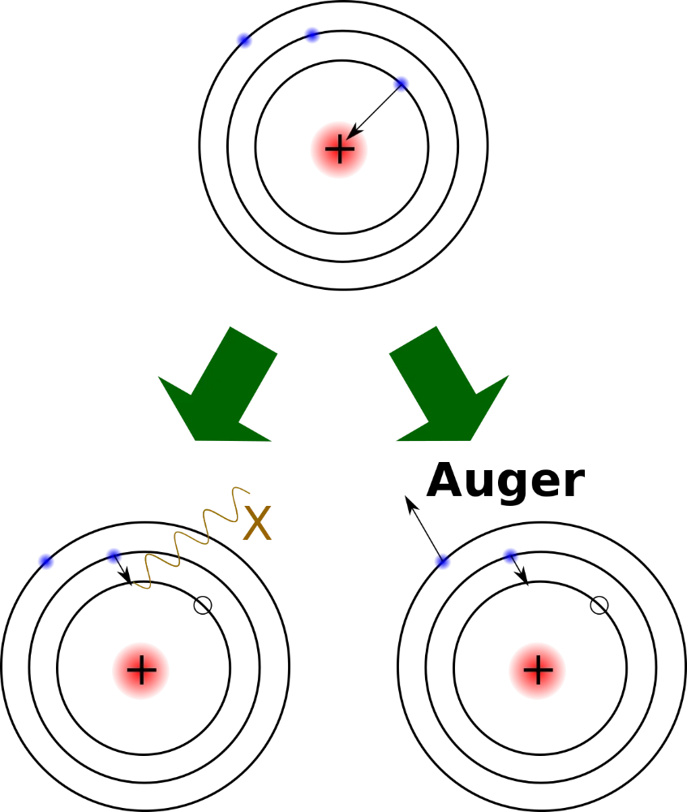
Beta decay and decay chains. Isotopes of different elements can share a mass number, like 234Th, 234Pa, and 234U. Decay keeps producing radioactive parents and daughters until a stable daughter forms; the series is a . 238U passes through a series of alpha (red arrows) and beta (blue arrows) decays to stable lead-206 (Figure 7.18).
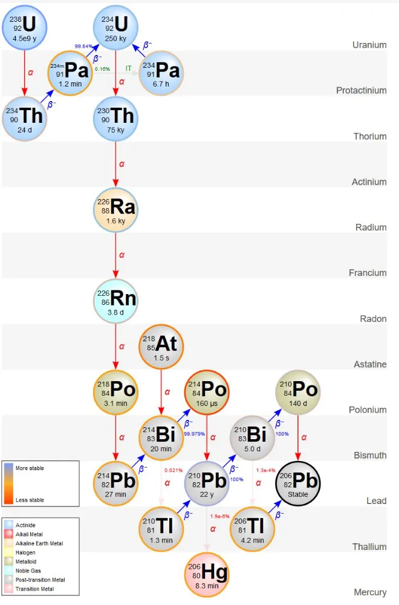
Electron capture. After the capture, either another electron drops into the empty spot and an X-ray is emitted, or, in the Auger process, another electron is released and the atom becomes an . Potassium-40 (40K) decays this way to argon-40 with a half-life of 1.25 billion years, very useful for dating geologic events. 40K is a tiny part (0.012%) of natural potassium; most potassium is not radioactive.
| Elements | Parent symbol | Daughter symbol | Half-life |
|---|---|---|---|
| Uranium-238 / Lead-206 | 238U | 206Pb | 4.5 billion years |
| Uranium-235 / Lead-207 | 235U | 207Pb | 704 million years |
| Potassium-40 / Argon-40 | 40K | 40Ar | 1.25 billion years |
| Rubidium-87 / Strontium-87 | 87Rb | 87Sr | 48.8 billion years |
| Carbon-14 / Nitrogen-14 | 14C | 14N | 5,730 years |
7.2.2 Radioisotopic dating
The parent and daughter isotopes are separated from the mineral by chemical extraction. For uranium, 238U and 235U are separated together, and so are 206Pb and 207Pb, measured with a .

The daughter-to-parent ratio. A new mineral has 100% parent and 0% daughter, so D/P = 0. After one half-life: 50% each, D/P = 1. After two: 75% daughter, 25% parent, D/P = 3 (Figure 7.20, Table 7.5). After about 10 half-lives so little parent is left that it is too hard to measure accurately. Modern work reaches about ±2 million years in 2.5 billion years.
| Half-lives (#) | Parent present (%) | Daughter present (%) | Daughter/Parent ratio | Parent/Daughter ratio |
|---|---|---|---|---|
| Start the clock | 100 | 0 | 0 | infinite |
| 1 | 50 | 50 | 1 | 1 |
| 2 | 25 | 75 | 3 | 0.33 |
| 3 | 12.5 | 87.5 | 7 | 0.143 |
| 4 | 6.25 | 93.75 | 15 | 0.0667 |
| 5 | 3.125 | 96.875 | 31 | 0.0325 |
| 10 | 0.098 | 99.9 | 1023 | 0.00098 |
Try it: half-life calculator
Two clocks in one sample. The uranium–lead method runs 238U and 235U at the same time, so each sample cross-checks itself. Many samples hold several parent–daughter pairs, and cross-checking these clocks confirms that radioisotopic dating is highly reliable.
Radiocarbon (carbon) dating
dates archaeological samples with organic substances like wood or bone, using unstable 14C and stable 12C (Figure 7.21).
Because about 10 half-lives is the useful limit, radiocarbon works back to about 57,300 years. Early users assumed atmospheric 14C stayed fairly constant over the last 50,000 years, but it has varied. Comparing carbon ages with tree rings and other known events has calibrated the method, and calibrated radiocarbon is reliable for archaeological specimens and very recent geologic events. Samples are measured in an accelerator mass spectrometer (Figure 7.22).

7.2.3 Age of the Earth
- Hutton and others open the idea of an ancient Earth (Unit 1).
- Lord Kelvin (William Thomson) assumes Earth began as a hot molten sphere and cooled: about 98 million years, stated as a range of 20–400 million.
- Radioactivity is discovered, giving a more accurate way to measure ancient ages.
- Clair Patterson, a graduate student at the University of Chicago, dates meteorites (left over from the solar system's formation) by uranium–lead with a mass spectrometer: 4.55 billion years ± about 70 million (±1.5%).
- Current estimate: 4.54 billion years ± 50 million (±1.1%), little changed in over 60 years.
Kelvin's numbers were far off because heat moves unequally inside Earth, and he did not consider that the mantle can flow and carry heat by . His estimate was thought plausible, though challenged.

7.2.4 Dating geological events
Isotopes of elements common in minerals work best. The uranium–lead method, with its two clocks, is used mostly on zircon (ZrSiO4), where uranium can take the place of zirconium in the lattice. Zircon resists weathering. During metamorphic events, zircon may grow new layers, each recording the age of an event.
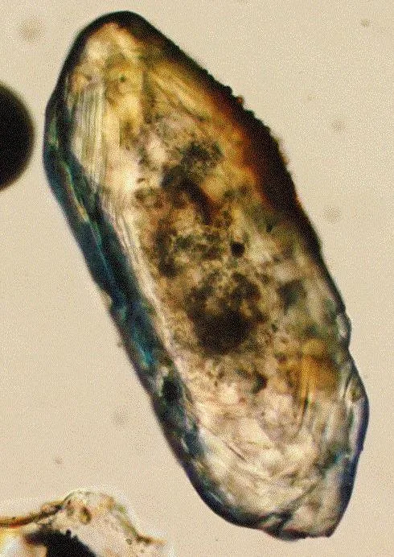
What old zircons tell us
- 4.4 billion years: zircons from Western Australia, formed when crust first separated from the mantle, inside much younger metasedimentary host rock. They show continental rock stood above sea level and Earth was cool enough for liquid water, so weathering and erosion could happen.
- 4.1 billion years: UCLA researchers found carbon in zircons that may be biogenic, a hint that life began earlier than thought.
Dating sedimentary sequences. Igneous rocks give crystallization dates; metamorphism tends to reset and smear them; detrital sediments mix many sources. So geologists date sediments with the igneous rocks around them (Figure 7.25). Potassium, common in evaporites, has also been used for potassium–argon dates.
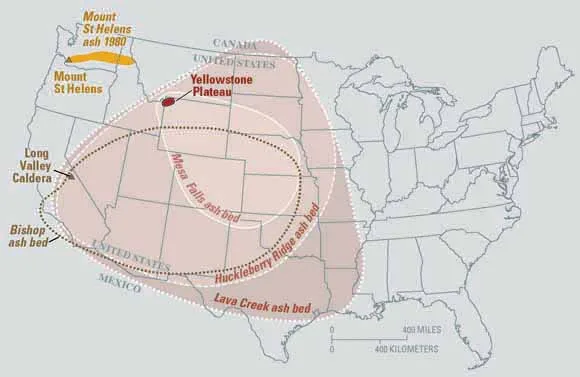
7.2.5 Other absolute dating techniques
(thermoluminescence) dating measures the time since silicate minerals in coarse sediment were last exposed to sunlight or heat at the surface. Background radiation from decay places electrons in traps in the lattice of minerals like quartz. Sunlight (UV) and heat at the surface empty the traps; once buried a few inches, the grains start trapping electrons again. In the lab, samples taken a few feet down are stimulated with light, releasing the electrons as photons: luminescence. The more light, the longer the burial. It works for sediments under 1 million years old. In Utah it dates coarse layers buried near faults like the Wasatch Fault, which lack buried organic soils for radiocarbon, to find the of large earthquakes.
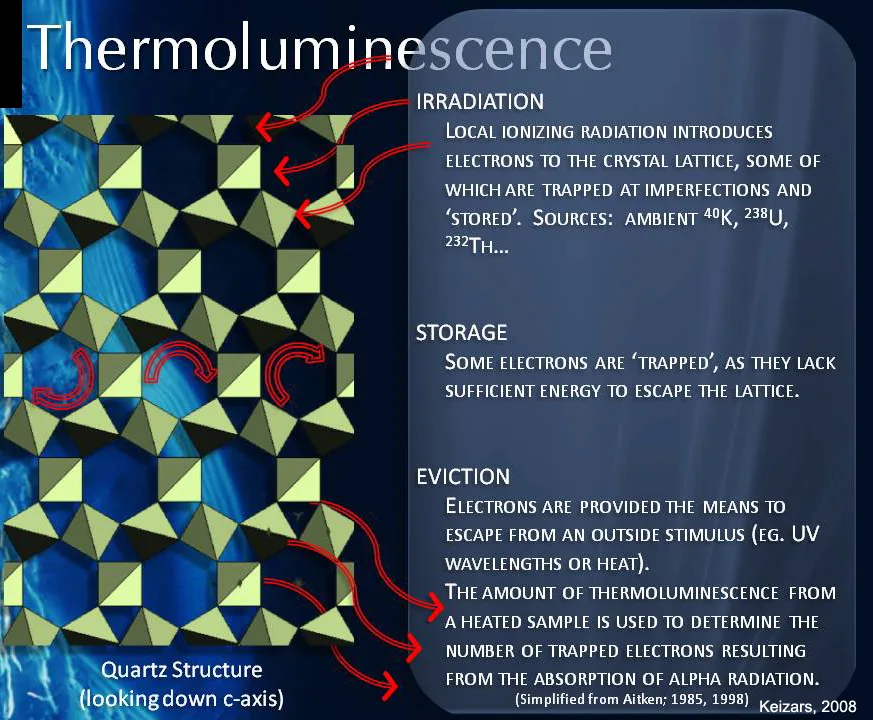

Fission-track dating
: uranium decay in mineral grains such as apatite leaves trails of lattice damage, large enough to count under an optical microscope. More tracks mean an older grain. Range: about 100,000 to 2 billion years (1 × 105 to 2 × 109). It is also used as a second clock to confirm other dates. (The tracks come from fission of 238U; see fact-check notes.)
| Method | What is measured | Useful range | Typical material |
|---|---|---|---|
| Uranium–lead | 238U→206Pb and 235U→207Pb ratios (two clocks) | Up to the oldest Earth materials and meteorites | Zircon |
| Potassium–argon | 40K→40Ar ratio | Geologic events (half-life 1.25 billion years) | Igneous rocks, evaporites |
| Radiocarbon | 14C left, compared with 12C | To about 57,300 years | Wood, bone, organic matter |
| Luminescence | Light released by trapped electrons | Less than 1 million years | Buried quartz-rich coarse sediment |
| Fission track | Number of damage tracks | About 100,000 to 2 billion years | Apatite and other uranium-bearing grains |
Check yourself: Section 7.2 quiz in the textbook ↗
7.3Fossils and evolution
are any evidence of past life preserved in rocks: actual body parts (rare), impressions of soft parts, casts and molds (more common), body parts replaced by minerals (common), or traces of behavior like footprints and burrows. Most life today is soft-bodied or single-celled and is unlikely to be preserved except in unusual conditions. The ocean is the best place for preservation, yet marine processes dissolve hard parts and scavengers remove remains; on land the chances are even lower. The fossil record is therefore incomplete, but it is still used for correlation (fossil succession) and for placing formations on the geologic time scale.
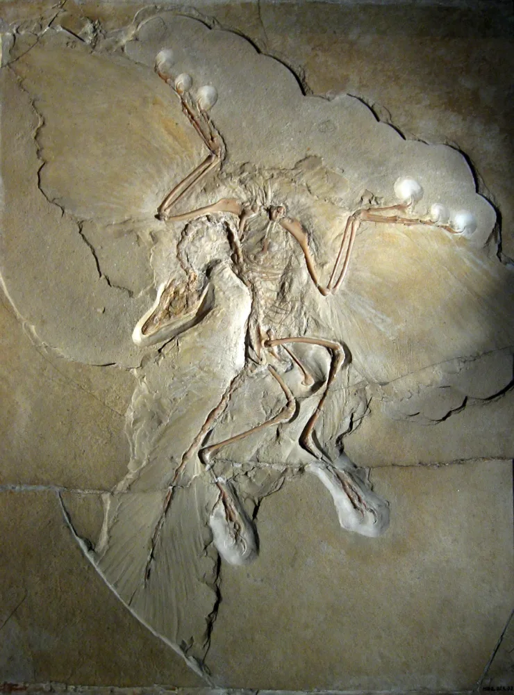
7.3.1 Types of preservation
Hard parts such as clam shells or dinosaur bones are the most common fossils, and their original material has almost always been replaced by new minerals that keep the shape.
| Type | How it forms | Examples |
|---|---|---|
| Rare. Original material or hard parts survive; soft tissue usually vanishes by bacterial decay. | Insects in amber; mother-of-pearl in shells; mammoth skin and hair in Arctic post-glacial deposits; rare mummified dinosaur soft tissue, with proteins and possible DNA fragments | |
| After burial, elements in groundwater fill every space in the body, even cells; bone and teeth are most likely to be preserved. | Petrified wood (cellulose structure kept) | |
| and | The organism dissolves, leaving a cavity (external mold); sediment or minerals filling it make a cast. Internal casts of clams, snails, even skulls can show soft structures. With the right chemistry and rapid burial, mineral nodules form around soft parts in 3-D: . | External mold of a clam |
| Tissues are compressed, volatiles driven out, and only a carbon silhouette is left. | Leaf and fern fossils | |
| Indirect evidence left by a living organism; studied in . | Dinosaur tracks (size, gait, speed, behavior), burrows, (fossil feces), (stomach stones) |
 Actual preservationmosquito in amber
Actual preservationmosquito in amber Permineralizationpetrified wood
Permineralizationpetrified wood Permineralizationtrilobite, hard exoskeleton
Permineralizationtrilobite, hard exoskeleton Moldexternal mold of a clam
Moldexternal mold of a clam Carbonizationcarbonized leaf
Carbonizationcarbonized leaf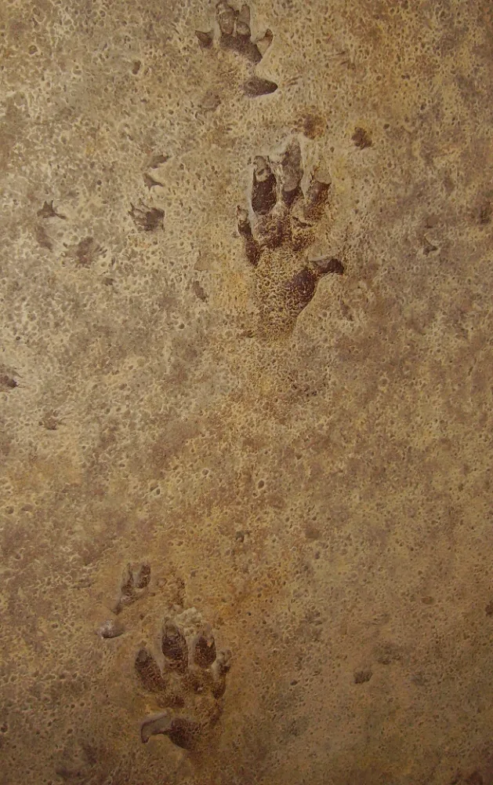
Trace fossilChirotherium footprints
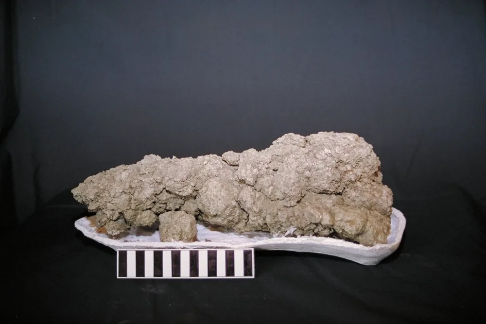
7.3.2 Evolution
Evolution produced the variety of fossils that make correlation possible. Charles Darwin (1809–1882) recognized that life forms evolve into new forms and proposed as the mechanism, working on organisms whose environments challenge their survival. A is the basic unit: a population with shared characteristics that can produce fertile offspring.
- Variation. Individuals in a population differ, through the mixing of genes in sexual reproduction and through natural mutations.
- Challenge. Each individual must survive the environment long enough to reproduce.
- Advantage. Individuals with helpful traits are more likely to reproduce and pass those traits on.
- Outcome. If too few individuals survive and the population cannot produce enough viable offspring, the species goes . If favored traits build up, populations can become genetically isolated (sometimes by a geographic barrier such as an island) and evolve into separate species.
The average species in the fossil record lasts about a million years. Some species show little change in form over time; others show gradual or punctuated change with visible intermediate forms. Darwin set out the theory in On the Origin of Species (Unit 1). Modern tools keep adding ways to study evolution and speciation; evolution is a well-established , far beyond the stage.
Check yourself: Section 7.3 quiz in the textbook ↗
7.4Correlation
establishes which sedimentary strata in separate places are the same age. It can use magnetic polarity reversals (Unit 2), rock types, unique rock sequences, or index fossils. There are four main types (Table 7.8).
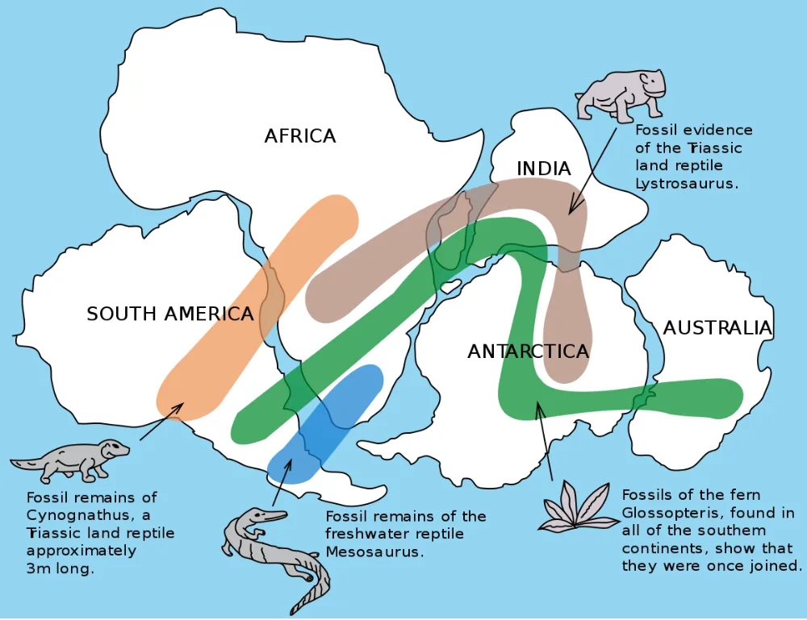
| Type | Matches strata by | Chapter example |
|---|---|---|
| Position in the sequence (stratigraphic relationship) | Wingate (Canyonlands) = Moenave (Zion) | |
| Lithology: composition and physical properties | Navajo Sandstone in Zion and Canyonlands | |
| Same age, even in different lithologies | Permian Capitan Reef, Texas | |
| Index fossils | Foraminifera; conodonts |
7.4.1 Stratigraphic correlation
Geologists map areas and build stratigraphic columns, detailed descriptions of strata from bottom to top. At Canyonlands National Park, the Navajo Sandstone overlies the Kayenta Formation, which overlies the cliff-forming Wingate Formation. At Zion National Park, the Navajo overlies the Kayenta, which overlies the cliff-forming Moenave Formation. By their position, the Wingate and Moenave correlate; they keep separate names because their composition and outcrop pattern differ slightly (Figure 7.33). Colorado Plateau strata can be correlated like this over thousands of square miles.
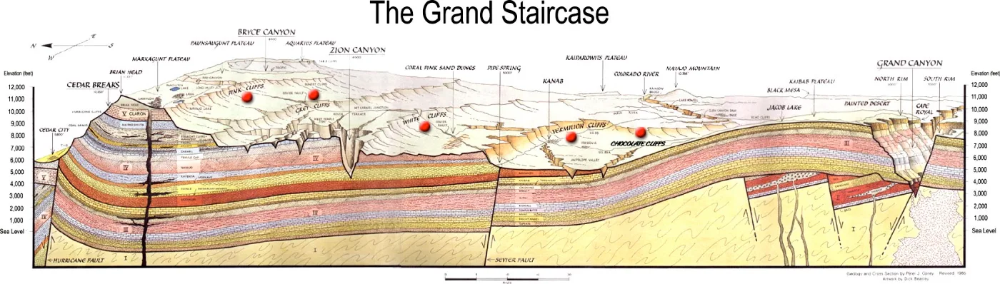
7.4.2 Lithostratigraphic correlation
Lithostratigraphic correlation matches strata by lithology (Greek lithos, stone): their composition and physical properties. It can match whole formations over long distances or trace smaller strata within formations to map their extent and depositional environments. The Navajo Sandstone that forms Zion's walls is the same rock in Canyonlands, hundreds of miles away, and in Capitol Reef and Arches National Parks. The same formation is called the Aztec Sandstone in Nevada and the Nugget Sandstone near Salt Lake City, where it is distinct enough to get its own name.
 Zion National Parkview from Angels Landing
Zion National Parkview from Angels Landing Stevens Arch, Coyote Gulchabout 125 miles from Zion
Stevens Arch, Coyote Gulchabout 125 miles from Zion
7.4.3 Chronostratigraphic correlation
Chronostratigraphic correlation matches rocks of the same age, even when their lithologies differ. Depositional environments change from place to place, so different sedimentary rocks form at the same time: in a marine setting, from beach to near-shore, shallow lagoon, reef, slope, and deep marine, each with its own formation. In the Permian Capitan Reef of the Guadalupe Mountains, West Texas, a red time line marks one moment when lagoon/back-reef, reef, and deep-water siltstone were all forming (Figure 7.36). This is how time units relate to rock units: a lithostratigraphic unit is one kind of rock, which can be different ages in different places, while a chronostratigraphic unit is all the rock formed in one span of time.
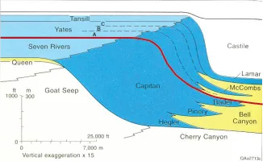

7.4.4 Biostratigraphic correlation
Biostratigraphic correlation uses , assemblages of organisms present only during specific intervals of time, to date strata. Fossils let geologists assign a formation to a dated range, such as the Jurassic Period (201–145 million years ago); most of the time scale is mapped to fossil assemblages. The best index fossils were geographically widespread but lived for only a narrow time (Figure 7.38).
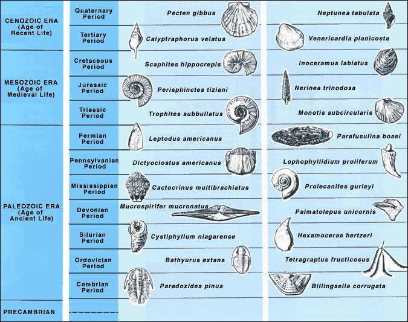
Microfossils, mostly from single-celled organisms, are some of the best: widely distributed, and those with hard shells preserve well. , single-celled organisms with calcareous shells, are especially useful for the Cretaceous Period and Cenozoic Era. are tooth-like phosphatic parts of an eel-like animal with no other hard parts; they correlate Cambrian to Triassic strata. The animals lived in shallow seas worldwide, evolved rapidly, and their scattered "teeth" are easy to separate from limestone in the lab.
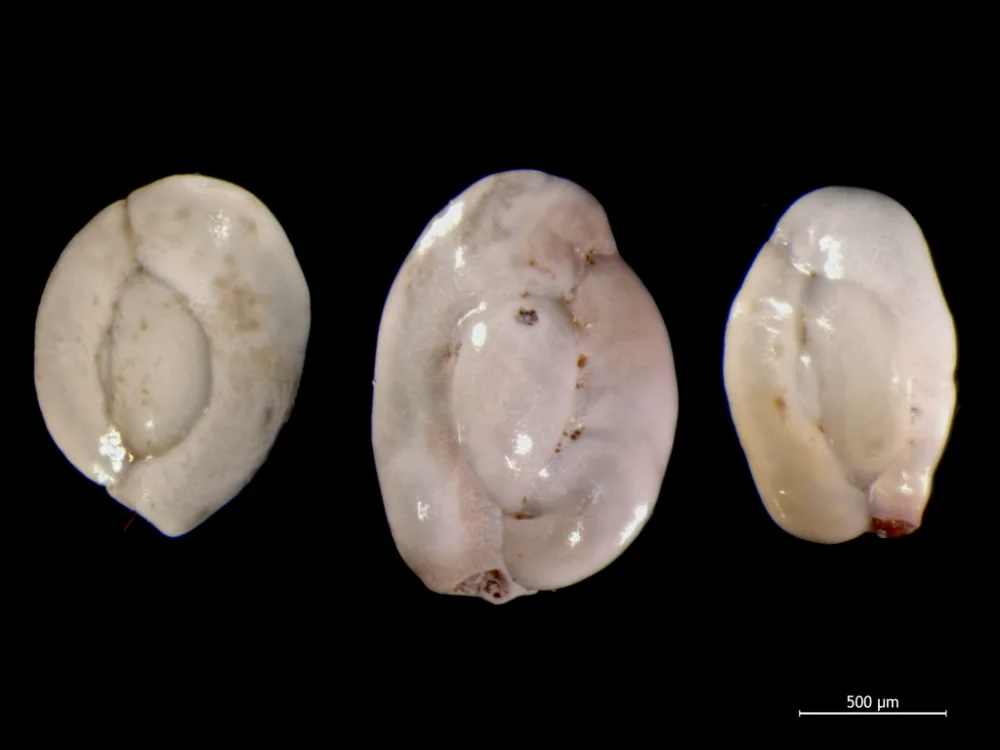
ForaminiferaQuinqueloculina seminula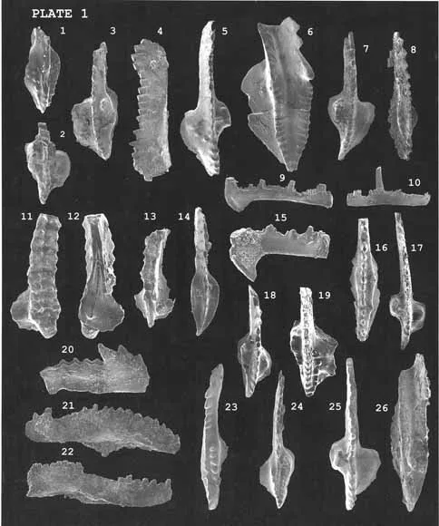
Conodontsfrom Alaska Conodont animalartist's reconstruction
Conodont animalartist's reconstruction
In the 1960s, a key study tied Triassic conodont zones to ammonoids (extinct cousins of the pearly nautilus), until then the only standard for Triassic correlation. Cross-referencing micro- and macro-index fossils made both more reliable, and conodonts went on to correlate Triassic strata internationally, across Europe, western North America, and the Canadian Arctic Islands.
7.4.5 Geologic time scale
Geologists divide time into nested units: (largest), , , , and age (Table 7.9, Figure 7.40). The divisions are the same everywhere on Earth, but rocks for a given span may be missing in a given place: time is an unbroken continuum, while the rock record has gaps.
| Time unit | Rocks of that unit are called | We are now in the |
|---|---|---|
| Eon (largest) | Eonothem | Phanerozoic Eon |
| Era | Erathem | Cenozoic Era |
| Period | System | Quaternary Period |
| Epoch | Series | Holocene Epoch |
| Age (smallest) | Stage* | Meghalayan Age* |
*Not in the chapter; from the International Commission on Stratigraphy chart (stratigraphy.org/chart).

The was built in the 19th century from the principles of stratigraphy; the order of its units was known before anyone could assign numbers. Biostratigraphic correlation used fossils to give era and period names to sedimentary rocks worldwide. Today some geologists think humans affect natural processes so strongly that a new unit, the , should be added.
Check yourself: Section 7.4 quiz in the textbook ↗
Summary
Events in Earth history can be placed in order with the principles of relative dating, and the geologic time scale was fully worked out in the 19th century this way, without any numeric ages. The discovery of radioactivity in the late 1800s allowed absolute dating from the decay of unstable isotopes; interpreting it correctly depends on the type of rock and on accurate assumptions about starting isotope levels. Together, relative and absolute dating have given the history of geologic events, the age of Earth, and the time scale with considerable accuracy. Correlation shows how depositional environments change from place to place. Geologic time is vast, leaving plenty of time for life to evolve, and some life forms, preserved as fossils, are used for biostratigraphic correlation. The time scale is continuous even where the rock record is broken.
Quick recap
- Relative principles: superposition, original horizontality, lateral continuity, cross-cutting, inclusions, fossil succession.
- Unconformities: nonconformity (strata on crystalline rock), disconformity (between parallel strata), angular (flat on tilted).
- Decay: alpha (Z −2, A −4), beta (Z +1), electron capture (Z −1). Half-life: time for half the parent to decay. D/P = 1, 3, 7, 15 … after 1, 2, 3, 4 half-lives.
- Clocks: U–Pb (zircon, two clocks), K–Ar, Rb–Sr, 14C (to ~57,300 yr), luminescence (<1 Myr), fission track (105–2 × 109 yr).
- Earth: 4.54 ± 0.05 billion years (Patterson, 4.55, from meteorites). Oldest zircons 4.4 billion years.
- Preservation: actual, permineralization, molds and casts, carbonization, trace fossils.
- Correlation: stratigraphic, lithostratigraphic, chronostratigraphic, biostratigraphic (index fossils: widespread, short-lived).
- Time units: eon › era › period › epoch › age; rock units: eonothem › erathem › system › series (› stage).
Check yourself: Chapter 7 review quiz in the textbook ↗
Resources
Fact-check notes
Every statement in this guide was checked against the textbook chapter. Where the chapter differs from current references or from itself, the guide says so here, so you know what the textbook says.
| Topic | Chapter says | Note |
|---|---|---|
| Number of principles | "Describe the five principles of stratigraphy" | Section 7.1.1 lists six (superposition, original horizontality, lateral continuity, cross-cutting, inclusions, fossil succession). The guide shows all six. |
| Section numbers | "7.1.3 Unconformities" and "7.1.3 Applying Relative Dating Principles" | Two sections share a number; the guide numbers the second 7.1.4. |
| Dating accuracy | "plus or minus two million years in 2.5 billion years (that's ±0.055%)" | 2 million ÷ 2.5 billion = 0.08%. The guide gives the plain values without the percentage. |
| Parent/daughter ratio after 5 half-lives | 0.0325 | 3.125 ÷ 96.875 = 0.0323. The table keeps the chapter's value. |
| Potassium-40 | Decays to argon-40 by electron capture | Most 40K (about 89%) decays to calcium-40 by beta decay; about 11% becomes 40Ar by electron capture. The 1.25-billion-year half-life covers both branches (Nuclear Data Sheets). |
| Fission tracks | Made when 238U "decays to the daughter product 234Th and releases an alpha particle" | Fission tracks are made by spontaneous fission of 238U, which splits the nucleus into two large fragments that fly apart; alpha-decay recoil damage is far too small to see in an optical microscope (Gallagher, Brown & Johnson, 1998, Annual Review of Earth and Planetary Sciences 26). The guide says "uranium decay … fission of 238U". |
| Oldest rocks | 4.4-billion-year zircons "have been determined to be the oldest known rocks" | They are the oldest known mineral grains, held in much younger host rock (as the chapter goes on to say). The guide calls them Earth's oldest known material. |
| Jurassic dates | "Jurassic Period (199 to 145 million years ago)" | The chapter's own time scale, and the ICS chart, start the Jurassic at 201 Ma; the guide uses 201–145. The current ICS chart also moves the base of the Cretaceous to 143.1 ± 0.6 Ma; the guide keeps the chapter's 145. |
| Start of the Phanerozoic | Glossary: 541 million years ago; time-scale figure: 539 Ma | The ICS chart gives 538.8 Ma; the guide uses the figure's 539. |
| Guadalupe | "Guadalupe National Monument" | The Capitan Reef is in Guadalupe Mountains National Park, Texas. |
| Beta decay | "a neutron … splits into an electron and a proton" | An antineutrino is also released; the chapter leaves it out, and so does the guide. |
Credits
Content summarized from An Introduction to Geology, Chapter 7, © 2017 Chris Johnson, Matthew D. Affolter, Paul Inkenbrandt, and Cam Mosher, licensed CC BY-NC-SA 4.0. Images are credited in each caption.
- From the chapter, under the licenses in its media attributions: Grand Canyon (hero, March 2013, nonconformity, Lipan Point), Isfjorden superposition, Grandview Point, fossil succession, Grand Canyon stratigraphy, Redwall/Temple Butte/Muav, the three unconformity drawings, block diagram, Nuvvuagittuq, hydrogen isotopes, half-life simulation, alpha decay, U-238 decay chain, electron capture, mass spectrometer, accelerator mass spectrometer, Hadean Earth, zircon, Yellowstone ash beds, thermoluminescence, apatite, Archaeopteryx, trilobite, amber, petrified wood, external mold, carbonized leaf, Chirotherium prints, coprolite, Gondwana fossil map, Grand Staircase, Navajo Sandstone (Zion, Stevens Arch), Capitan Reef, onlap/offlap, index fossils, foraminifera, conodonts, conodont animal, geologic clock.
- Redrawn for this guide from chapter figures: half-life graph (after Krishnavedala, public domain) and geologic time scale (after B. C. Madsen for SLCC).
- Drawn for this guide: principles of relative dating, radiocarbon steps, dating strata with igneous rocks, Canyonlands–Zion correlation.
- Outside references for checking: International Commission on Stratigraphy chart (stratigraphy.org/chart); Gallagher, Brown & Johnson (1998) on fission tracks; Nuclear Data Sheets for 40K decay branches.